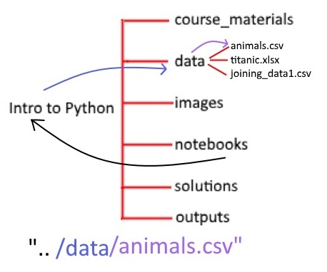
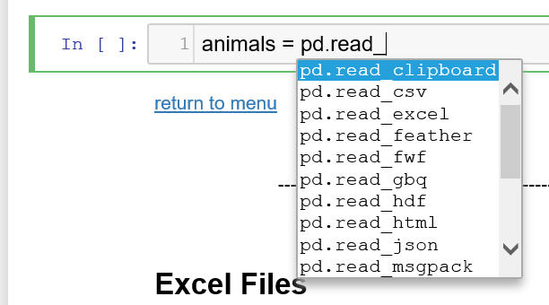

Chapter 3 - Reading In and Exporting Data

This is a HTML document. The Introduction to Python course is written and intended to be used in a Jupyter Notebook file. These HTML documents have been made available for users who require screen readers or other accessibility needs. These HTML documents have been tested, but if you notice any errors or any compatibility issues please contact us on the GSS Capability email inbox.
If you are using a screen reader you will need to set your punctuation level (sometimes called verbosity) to full, especially for the code sections.
Chapter Overview and Learning Objectives:
-
- Script Structure
- Packages in this session
-
- Setting Working Directories
- Relative vs Absolute file Paths
- A note on file paths
1 Script Structure and Packages
1.1 Script Structure
Scripts should be read like books, from top to bottom and left to right. As such, packages and data should be loaded at the top of the script, which ensures that they’re available to use right from the start of your work.
Your code should also include explanatory comments, as well as following the naming conventions we talked about in chapter 2. You may understand your code now, but will you still understand it 6 months down the line, or will your co-worker understand it when you leave?
1.2 Packages
In this session we will use pandas, and give it the nickname pd.
1.2.1 Exercise
Import Pandas into your session.
import pandas as pd2 Project Structure
There’s many important reasons to structure our projects:
You may have noticed the clean folder structure of the intro_to_python.zip folder you downloaded. As our projects grow we can end up with a large amount of data files; notebook files and outputs. Keeping them structured is a really important aspect of managing your data. Imagine if you sent your colleague a folder that looked like this:

Finding the right files within here is tricky, and this is just the content we’ve explored so far on the course!
Having a folder structure like the following (sometimes known as a tree like structure), helps to keep our data organised. Of course, if there are guidelines at your organisation, ensure you organise your files according to that.

2.1 Setting Working Directories
The working directory is the place where Python automatically looks for our files, you can think of it as where we are currently located in the files of the computer itself.
2.1.1 Example
You can check what your working directory is by using the magic command in Jupyter.
%pwdThis stands for “Print Working Directory”.
If you’re using another IDE (such as Spyder or VSCode scripts) you can find your working directory using:
import os # This library has many functions for interacting with the file system of the computer
os.getcwd()'/Users/jakemarshall/Desktop/curriculum_review_repos/af_introduction_to_python/html_course_version'This stands for “Get Current Working Directory”
Note that the output here of os.getcwd() will be different to yours! Yours is likely to be:
‘C:\Users\username\Intro_to_Python\notebooks’
If you work within ONS. This is because we saved this zip file into our C Drive. If you saved to a different location the first part may be different.
No matter what the first part is, you will always have Intro_to_Python\notebooks as the end part of the folder path. We’ll see why this happens in a second.
What if we want to change our current working directory?
2.1.2 Example
You can change your working directory by using the command (in Jupyter)
%cd ‘filepath_of_new_directory’
e.g.
%cd //fa1rvwapxx333/Intro_to_Python/Notebooks
for other IDEs you will need to do (these lines are commented out as I don’t want to run it in this HTML document) the following:
# import os
# os.chdir("//fa1rvwapxx333/Intro_to_Python/Notebooks")This stands for “Change Directory” and changes our current directory to the one we have specified. You may want to change your directory if you are working with large data files; or working on a group project from a shared network drive. It is important to note that shared network drives have two forward slashes at the start.
2.2 Relative vs Absolute file Paths
If I want to give you a location of a file, I can use the absolute file path. Let’s say, for example, that I have saved the “Intro_to_Python” folder in my C Drive and I want to access the file animals.csv.
The full or absolute location of this file is:
“C:/Users/username/Intro_to_Python/Data/animals.csv”
This is clear and explicit about where the data is stored. However, if you were to use this link you would need to change elements of it, for example your username is not “username”.
Because my working directory is automatically set to “C:/Users/marshj1/Intro_to_Python/notebooks”, I can use what’s called a relative path.
A relative path is the location relative to the working directory, i.e., we specify the filepath starting from where we currently are in the folder structure.
For example, I can load the same file as above using the path
“../data/animals.csv”
This will work for any user, as long as their working directory is set to the Notebooks Folder in the Into_to_Python folder. You may notice here I’ve used two full stops, which is something we have yet to see. This refers to us moving back one level in the folder structure.
Since animals.csv is within the data folder, not notebooks where we currently are, we must back out to the parent folder “Intro_to_Python” before we can specify the path to the dataset (which is within the data folder!).
Note that stringing these together as ../.. moves back two folders in the structure and so on, allowing us total control over relative file paths.
Here’s a very handy diagram that explains the principle of relative filepaths.

The black arrow leads from the starting location; or the working directory “notebooks”, and moves to the parent Intro_to_Python” folder, using the “..” notation. The blue arrow moves forwards into the required folder, which is “/data” and the purple arrow selects our file name “/animals.csv”.
2.3 A note on file paths
We highly recommend using forward slashes “/” within file paths. However, when copying a file path from Windows Explorer it will often have the backslash character instead of a forward slash.
This causes issues in two ways. Firstly, this is a Windows exclusive issue, as Mac and Linux operating systems use the forward slash /. Secondly the backslash symbol is often used as an escape character within Python. Thirdly; although Python will often accept backslashes, other commonly used languages, like the statistical programming language “R” will not. It’s worth getting into the good practice of using forward slashes.
Lastly, if you absolutely must use backslashes you should preface the string with the letter r, to ensure it’s passed as a raw string, rather than a unique character in Python. This is commented out below due to conflicts with the software these notes are written in, but will work for you if you have followed thus far!
2.3.1 Example
# school = pd.read_csv(r"..\data\schools_data.csv")Don’t worry about the function itself for now, this will be discussed in the next section! Note that this is commented out in the HTML to prevent issues with it running.
3 Flat Files
Flat files are files like .csv (Comma Separated Value), .txt files etc. The data is stored in a single table, with a specific delimiter (this is the comma in csv’s) used to separate values into columns.
3.1 Reading in flat files
We use pandas to read in our files in this course. There are ways of reading in files without using this package; however, using pandas will bring in our data as the specialised data type we introduced in the last chapter, a DataFrame.
To import a .csv file we need to give the data an identifier or a variable name as we want to assign the object we are creating. To start, let’s import the animals data, give it the variable name animals and use an = to assign to it.
I’m using one of the read functions from pandas. So I use the pd abbreviation before calling my function. This group of functions starts .read_ and there are a large variety of them as part of the pandas package, a few of which we will see here.

3.1.1 Example
To read in a file, we must choose the appropriate read method, in this example we are using a flat file (csv) from the data folder:
animals = pd.read_csv("../data/animals.csv")The pd.read_ function we want is pd.read_csv(), and in the brackets the only parameter we must specify (mandatory!), is the filepath to the location of the file we wish to read in as a DataFrame. These are strings and as such, should go in quotation marks. We also need the file extension (.csv, .xlsx etc) as we are leading the read function to the exact file location and as such need the exact file name.
When we import data into Jupyter notebooks we get no confirmation that this code has worked. The number within the square brackets increases, indicating the cell has run. Whilst this may seem like a red flag, it’s quite the opposite when it comes to reading in data!
After importing data it may be useful to check that it appears as a variable using the magic command %whos. In IDEs (such as Spyder, VSCode etc) that have a variable explorer, you will see the object we have created appear there with some basic information (like its dimensions).
We will explore how to investigate and analyse this dataset in-depth in the next chapter, for now we will just do some viewing of the object we have created. For small datasets we can print it by inputting the name, however for large data sets this is not practical.
3.1.2 Example
Let’s get a birds eye view of our dataset! To do so, give Python the DataFrame name and then call the .head() method. This returns the top 5 rows by default.
animals.head() IncidentNumber DateTimeOfCall CalYear ... AnimalClass Code London
0 139091 01/01/2009 03:01 2009 ... Mammal 00AH Outer London
1 275091 01/01/2009 08:51 2009 ... Mammal 00AH Outer London
2 2075091 04/01/2009 10:07 2009 ... Mammal 00BF Outer London
3 2872091 05/01/2009 12:27 2009 ... Mammal 00AS Outer London
4 3553091 06/01/2009 15:23 2009 ... Mammal 00AR Outer London
[5 rows x 19 columns]3.1.3 Exercise
Import the data schools_data.csv from the data folder with an appropriate variable name.
Use the optional parameter n = (which specifies the number of rows to return) in the .head() method to view the top 12 rows of the dataset.
Look at the bottom of the data using the .tail() method. All of our missing data is at the bottom, so you may see lots of nan values, which stands for not a number.
# (a)
school = pd.read_csv("../data/schools_data.csv")# (b)
school.head(n = 12)
# OR school.head(10), you don't need to specify the argument name in this case! URN ... 16 - 19 study programmes
0 100000 ... 9.0
1 100005 ... 9.0
2 100006 ... 9.0
3 100007 ... 9.0
4 100008 ... 9.0
5 100009 ... 9.0
6 100010 ... 9.0
7 100011 ... 9.0
8 100012 ... 9.0
9 100013 ... 9.0
10 100014 ... 9.0
11 100015 ... 9.0
[12 rows x 19 columns]# (c)
school.tail() URN ... 16 - 19 study programmes
21960 143927 ... NaN
21961 143938 ... NaN
21962 143939 ... NaN
21963 143940 ... NaN
21964 143946 ... NaN
[5 rows x 19 columns]For this initial read in we only used the mandatory paramter of the filepath, but when we look at the docstring we can see that there are many other arguments we can specify. This includes:
- Changing the delimiter (an example would be .tsv, tab separated value)
- Skipping Rows
- Parsing in date columns (breaking down into component parts)
- Manually specifying additional missing values
Recall that to look at the docstring for read_csv(), we use help(read_csv).
We have seen parameters and arguments a few times throughout the course, but have yet to formally define them. A parameter is a name or a label for an argument that follows it.
As we’ll see later some parameters are optional, and Python can identify what they relate to by the order we pass them to our method. However, it’s less ambiguous to both python (and whoever reads your code) if you include the parameter (the name) as well.
It’s worth noting here that most of these parameters have default arguments. A good example of this is the sep= argument of the read in function, it tells Python that the argument that follows will be what the separator/delimiter type is in the file. The comma “,” is the default argument, so without specifying it, Python assumes sep = ‘,’, which we can change if we desire.
3.1.4 Example
If my separator was a semi colon I could write my pd.read_csv() statment like this:
# school = pd.read_csv("../data/schools_data.csv", sep=";")4 Excel Files
As mentioned earlier we can also use the pd.read_ functions to read in excel files. These have the file extension xlsx and differ slightly from comma separated value files.
4.1 Reading in excel files
The function for reading in these files is pd.read_excel(), which also takes a minimum of one argument; the location of the file including the file extension.
4.1.1 Example
Here we will read in a file called titanic.xlsx from the usual data folder, calling it the object titanic. Let’s also bring back .sample() to display just one random row of the data.
titanic = pd.read_excel("../data/titanic.xlsx")
titanic.sample()Like with pd.read_csv(), pd.read_excel() has additional parameters we can set. Have a look at the docstring using help(pd.read_excel) and note the interesting ways Python can interact with Excel workbooks.
4.1.2 Exercise
Import the data police_data.xlsx. We specifically want the second sheet, this has the name “Table P1”. You will need to specify some additional parameters. Look in the help documentation to see which one you should specify.
Hint - If referencing the sheet by index position; remember that Python starts counting at 0!
# Option 1
police = pd.read_excel("../data/police_data.xlsx", sheet_name=1)
police.head()
# Option 2
# police = pd.read_excel("../data/police_data.xlsx", sheet_name = "Table P1")
# Note if you're using an older version of Pandas ( < 0.21.0 ) the parameter is sheetname = with no space. Area Codes ... Fraud
0 E23000013 ... 97
1 E23000008 ... 48
2 E23000007 ... 147
3 E23000006 ... 347
4 E23000002 ... 127
[5 rows x 27 columns]5 Reading in Other File types
We can also import a wide variety of other file types using the pd.read_ family of functions. For example we have:
- json
- sas
- sql
- stata
- pickles
While we don’t cover these in this course you can explore the docstrings for each of these file types.
There are other packages available if you wish to load other file types. For ONS users this may require you downloading other packages. You can find instructions on how to do this from Yammer.
For users outside of ONS you may wish to consult your department; or if you are using a non-networked laptop you can see here for instructions.
6 Exporting Data
As well as reading in data we can also export data from Python.
When we load data into Python using Pandas we create a temporary copy of it within our session. Any changes we make to the data won’t be reflected in the saved file. For example if you deleted columns, and closed your Python script without exporting the data, your data would still have all of it’s columns when you import it in again (reload).
6.1 Using pandas to save files
6.1.1 Example
To save our files we use the to_csv() after our DataFrame object, with the mandatory parameter being the filepath (or location) where to save the new file we are creating.
titanic.to_csv("../outputs/my_titanic.csv")Again, nothing seems to have actioned within Jupyter - the line number has increased so we know the code has run. If you check the outputs folder in File Explorer you will see the new file there. As we talked about earlier; having the outputs in a different folder to the raw data is a good step for keeping our projects organised, plus it prevents us from making any mistakes overwriting or removing incorrect files.
If you type “pd.to_” and place your cursor after the underscore in the cell above and hit tab. You will see that there are many other file formats we can export to, just as there are many that we can import. Each of these has additional parameters you can specify to get the exact exported file you want.
6.1.2 Exercise
Export the animals dataset as an excel file, remember that the file extension is “.xlsx”. Ensure that you save it in the Outputs folder.
# load in the animals and titanic dataset
animals.to_excel("../outputs/animals.xlsx")7 Chapter Summary
Fantastic job, you have completed chapter 3 of the Introduction to Python course!
In Chapter 4 you can look forward to a deep dive into DataFrames, covering all aspects of working with them, such as:
- Exploring Data
- Sorting Data
- Subsetting Data
- Filtering Data
- Merging Datasets